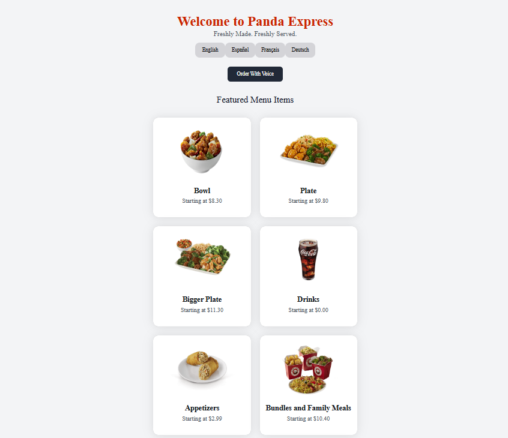

Automated Checkout Software

For my automated checkout software I create python scripts to automate online purchases on various websites such as nike, target, bestbuy, supreme, adidas, and more. The main goal of the project was to purchase an item quicker than an human could. I used selemium webdriver and BeautifulSoup to find the correct item and go through the checkout process. Sometimes, the website would have measures in place to prevent automated purchases, so I would have to find various workarounds to combat the "bot protection". During this project I gained experience in HTML parsing, Selenium, and web scraping technologies.
Mock Fast Food POS System

For the Fast Food POS System, I worked in a team setting using Agile to develop a fully hosted mock point-of-sale system. We utilized React for the UI, AWS for the database management, and GitHub for the version control. The system included a kiosk ordering system, a dynamic menu board, a kitchen view with newly placed orders, a cashier ordering system, and a manager page with controls to handle all employee, inventory, and store management. During this project I gained experience in GitHub, React, SQL, and how to develop software with a team instead of by myself.
Prospective Project

One project I would like to work on is an alert system for important school events. I would like to create something that syncs with professor's syllabuses and online class schedules and sends warnings at a user-decided time and number before the assignment/quiz/test is due. I would like to create an app to do this, which means I would most likely use Swift to program it. I'm not sure how exactly I would sync professor's syllabuses to the app, but I would be excited to tackle that problem.